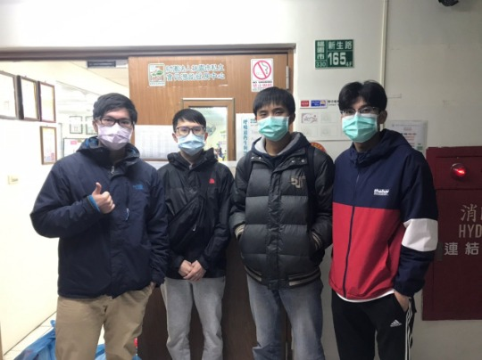

江栢祥
前往中心服務學習體會了面對身心障礙的孩子必須要有非常大的愛心還有耐心，但是能夠將專業能力應用在幫助社福機構也是讓我感到自己的所學沒有白費並能夠幫助別人。
More
張育豪
我第一次去到寶貝潛能開發中心，看到那邊的小朋友每個都很有活力，那種不因任何病痛而放棄追逐快樂的樣子，讓我對於自己現有的事物感到更加的珍惜。
More
張騰彬
這次很難得有機會可以去寶貝潛能發展中心，在過程中我學會要有耐心來陪伴小孩，並且協助老師，我也從中瞭解到了每個狀況不同的小孩他們所需的幫助也各有不同。
More
李駿賢
在寶貝中心學習到了耐心陪伴，以及了解他們的不便，如何利用自己所學幫助他們更容易融入社會，是這次服務學習所體認到的，也更珍惜自己所擁有的一切。
More
李啟赫
這次的體驗讓我學會了關懷與耐心，協助幫忙著那邊的老師照顧小孩，想辦法讓他們能和一般學生一樣的受到教育和學習，在過程中也思考如何讓他們的生活更方便簡單，健全發展，也試著吧我們的專長發揮作用。
More

中心主任陳美谷女士非常喜愛身心障礙幼童，她的願景就是成立一家身障機構好好照顧這群寶貝們，於是她找尋了一群志同道合、理念相同的老師們在沒有財團的支持下，憑藉自己本身的力量出來創造日托身障機構，在她的生命當中找到價值的時候卻得知已經罹患到乳癌二期，但她卻不畏懼任何辛苦，在醫院及機構間來回奔波著，連在化療時一心也只惦記著『身心障礙幼童的學習絕對不能耽誤，寶貝潛能發展中心一定要順利完成』，於是在排除種種困難之際，我們終於成功順利在民國94年3月29日立案完成，成為目前桃園市桃園區唯一立案的專職早期療育日托機構。